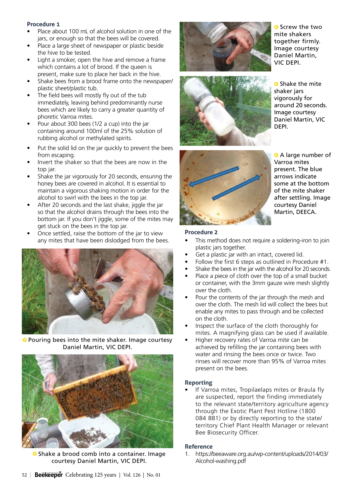

Procedure 1
•
Place about 100 mL of alcohol solution in one of the
jars, or enough so that the bees will be covered.
•
Place a large sheet of newspaper or plastic beside
the hive to be tested.
•
Light a smoker, open the hive and remove a frame
which contains a lot of brood. If the queen is
present, make sure to place her back in the hive.
•
Shake bees from a brood frame onto the newspaper/
plastic sheet/plastic tub.
•
The field bees will mostly fly out of the tub
immediately, leaving behind predominantly nurse
bees which are likely to carry a greater quantity of
phoretic Varroa mites.
•
Pour about 300 bees (1/2 a cup) into the jar
containing around 100ml of the 25% solution of
rubbing alcohol or methylated spirits.
•
Put the solid lid on the jar quickly to prevent the bees
from escaping.
•
Invert the shaker so that the bees are now in the
top jar.
•
Shake the jar vigorously for 20 seconds, ensuring the
honey bees are covered in alcohol. It is essential to
maintain a vigorous shaking motion in order for the
alcohol to swirl with the bees in the top jar.
•
After 20 seconds and the last shake, jiggle the jar
so that the alcohol drains through the bees into the
bottom jar. If you don’t jiggle, some of the mites may
get stuck on the bees in the top jar.
•
Once settled, raise the bottom of the jar to view
any mites that have been dislodged from the bees.
Procedure 2
•
This method does not require a soldering-iron to join
plastic jars together.
•
Get a plastic jar with an intact, covered lid.
•
Follow the first 6 steps as outlined in Procedure #1.
•
Shake the bees in the jar with the alcohol for 20 seconds.
•
Place a piece of cloth over the top of a small bucket
or container, with the 3mm gauze wire mesh slightly
over the cloth.
•
Pour the contents of the jar through the mesh and
over the cloth. The mesh lid will collect the bees but
enable any mites to pass through and be collected
on the cloth.
•
Inspect the surface of the cloth thoroughly for
mites. A magnifying glass can be used if available.
•
Higher recovery rates of Varroa mite can be
achieved by refilling the jar containing bees with
water and rinsing the bees once or twice. Two
rinses will recover more than 95% of Varroa mites
present on the bees.
Reporting
•
If Varroa mites, Tropilaelaps mites or Braula fly
are suspected, report the finding immediately
to the relevant state/territory agriculture agency
through the Exotic Plant Pest Hotline (1800
084 881) or by directly reporting to the state/
territory Chief Plant Health Manager or relevant
Bee Biosecurity Officer.
Reference
1. https://beeaware.org.au/wp-content/uploads/2014/03/
Alcohol-washing.pdf
Shake a brood comb into a container. Image
courtesy Daniel Martin, VIC DEPI.
Pouring bees into the mite shaker. Image courtesy
Daniel Martin, VIC DEPI.
Screw the two
mite shakers
together firmly.
Image courtesy
Daniel Martin,
VIC DEPI.
Shake the mite
shaker jars
vigorously for
around 20 seconds.
Image courtesy
Daniel Martin, VIC
DEPI.
A large number of
Varroa mites
present. The blue
arrows indicate
some at the bottom
of the mite shaker
after settling. Image
courtesy Daniel
Martin, DEECA.
52 |
Celebrating 125 years | Vol. 126 | No. 01